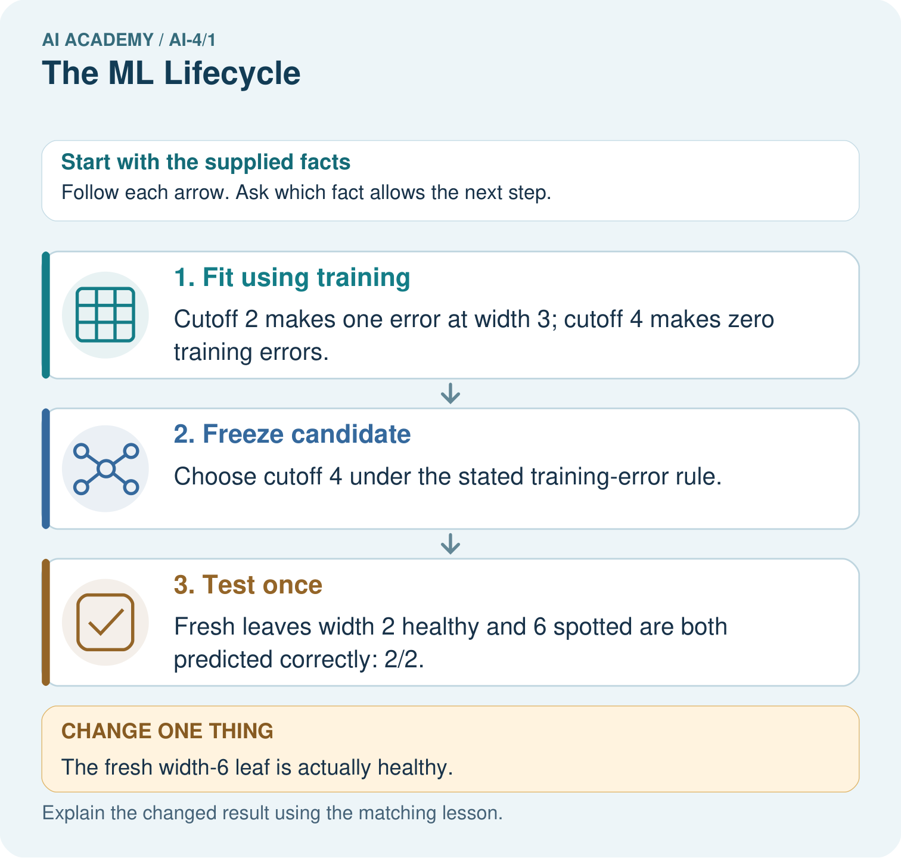
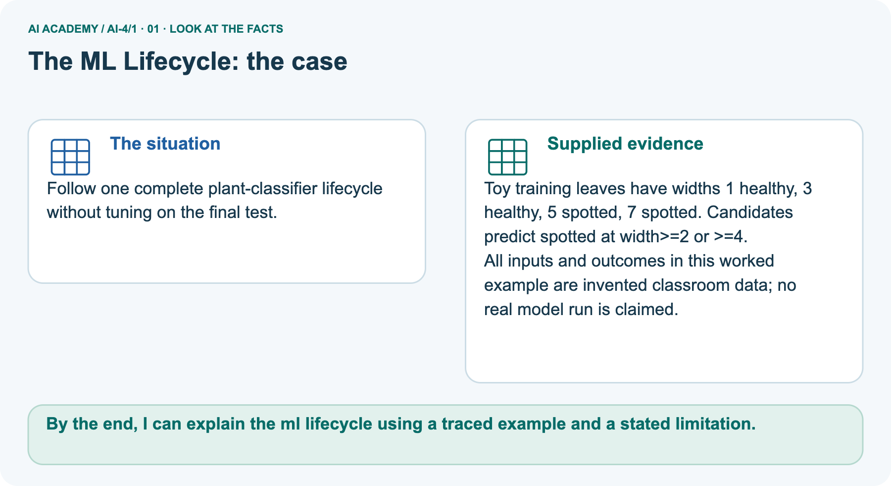
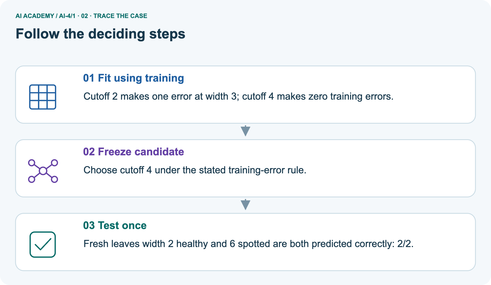
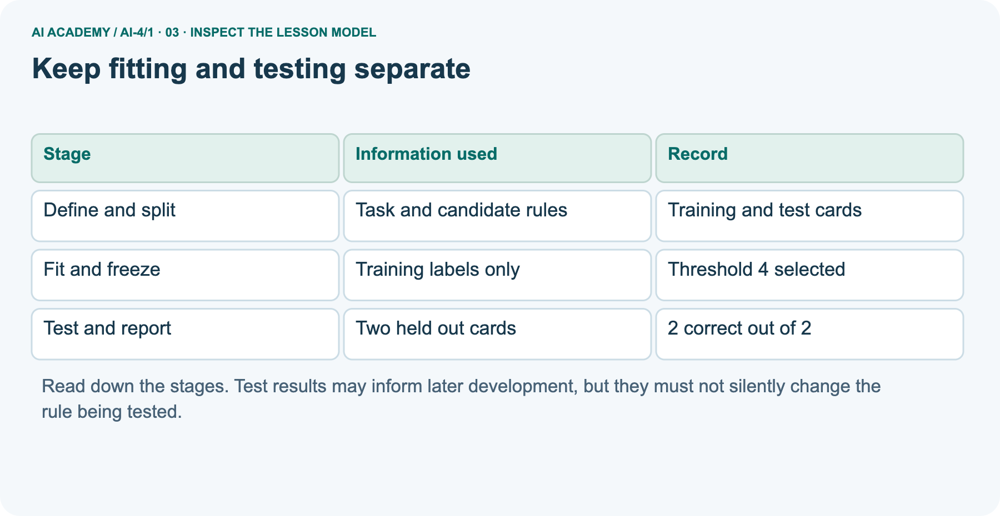
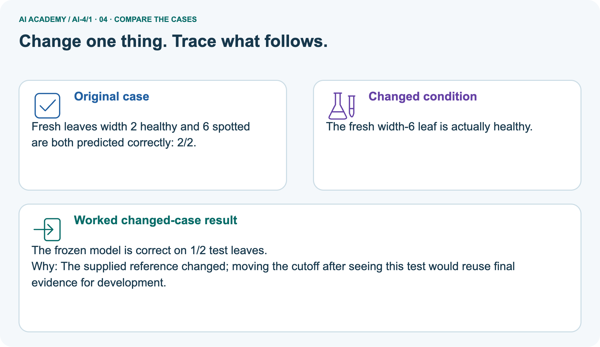
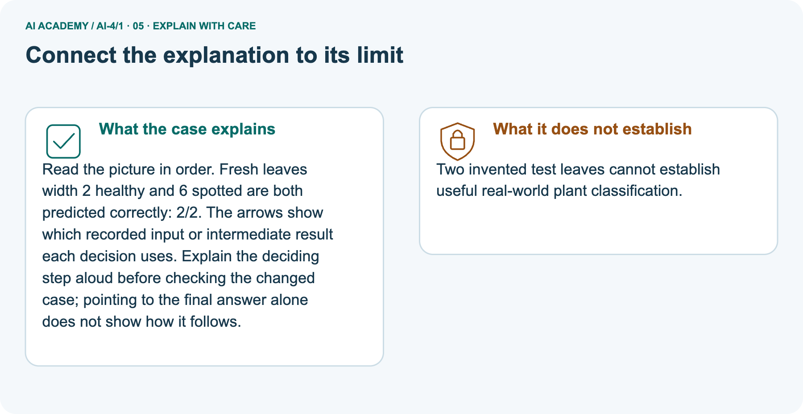
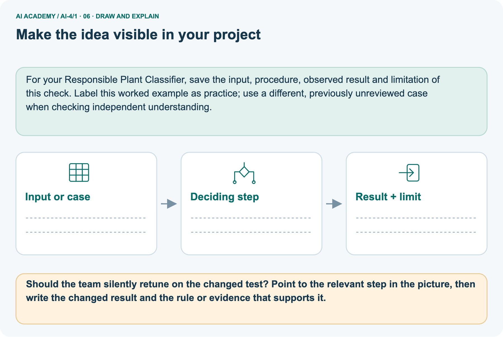

AI Academy · Level 4 · Grade 9 · Week 1 · Teacher guide
The ML Lifecycle
Learn to understand, design, build, test and explain AI systems responsibly.
Project: Responsible Plant Classifier
Teacher guide · 1 of 9
The ML Lifecycle
Prepare The ML Lifecycle: check the target, prerequisites, resources and adaptable teaching schedule.
Teach the learning cycle
Primary target: Distinguish fitting a rule from applying a fixed rule
| Session | Sequence and minutes | Resources |
|---|---|---|
| Session 1 · Understand · 45 min | 0–7: recall and prerequisite; 7–15: inspect the concrete case and predict; 15–30: teacher models the worked trace; 30–40: learners explain a step using the text and visual; 40–45: check the core idea. | Sections 1–6; record the brief recall in the workbook. |
| Session 2 · Practise · 45 min | 0–5: retrieve the procedure; 5–15: W2 completion practice; 15–23: explain and check with a partner; 23–30: each learner answers the misconception check; 30–40: targeted reteaching or a harder variation; 40–45: prepare the investigation. | Sections 7–10; use the matching workbook W2 and misconception check. |
| Session 3 · Investigate and transfer · 45 min | 0–5: retrieve the decision rule; 5–20: investigate or trace; 20–30: start the independent case; 30–38: connect the project; 38–43: act on feedback; 43–45: plan the return check. | Use “Run the investigation”, “Connect your project”, “Show what you know”, “Study a complete case” and “Try a new case independently”. Give extra time for the full task set. If this week has a coding lab, use its named section; section numbers can change when extra explanations are included. |
This is a starting allocation of 135 minutes, not a validated duration. Preserve all named topics. Schedule extra time for connected examples, the full investigation, independent cases and project building.
Repeated copies of a case share one recorded attempt; they are not new evidence.
Retrieval answer guidance
Creator Defense
Without opening the old lesson, explain one key idea from Creator Defense. Give an example and a mistake that the idea helps you avoid.
Look for: Explain the mechanism and terminology of generative systems defense
Reference example, not the only acceptable wording: Teacher explanation: A generative-system defense presents the question, architecture, corpus, permissions, baseline, evaluation and unresolved failures.
Demonstration fluency is only one observable property. Link each claim to a recorded result. State the distinction between retrieval relevance, claim support, fallback and permissions.
Give a reproduction packet and answer challenges without inventing missing measurements.
Use the student module and workbook section with this exact week title. The worked case, independent question and answers below form one aligned lesson sequence.
What the learner must demonstrate
A team labels photos, fits a model and celebrates one correct new photo. List the missing evaluation steps and define the intended use before testing.
Concept to explain
Machine learning is an evidence cycle: define a prediction problem, prepare examples, fit a model, evaluate on unseen data, and improve one diagnosed cause.
| Term | Meaning |
|---|---|
| machine learning | fit a model from examples |
| training | adjust model parameters using examples |
| inference | apply the fitted model to new input |
| evaluation | measure behavior on unseen examples |
Prepare the class
Use the supplied scenario, student illustrations and blank paper. For numeric work, offer counters or a calculator after learners show the setup. Fictional records are supplied; personal data and paid accounts are unnecessary.
Alternative compact allocation
This compact option is not the full-week schedule. Use the main teaching cycle and allow extra sessions for the investigation, independent work and project.
Allow 80 minutes: recall 8; explanation 12; worked demonstration 15; guided practice 20; independent assessment 15; project and reflection 10. Extend the lab into a second session when needed.
Preparation for the connected explanation
Teach this Grade 9 machine learning lesson using the compact two-session route, or use the full three-session weekly plan. The central distinction is selection from labelled training examples versus evaluation of a fixed rule on separate examples.
This is a deliberately small supervised classification exercise, not a deployed card recognition system. Students can complete it on paper; Python checks their trace. Do not add neural-network terminology or external accounts.
The training loop reports candidate mistakes, and students explicitly select and record the winner.
Readiness answer
3 of 4, or 75 percent, are correct in these cases. It does not prove correctness on future cases.
Printed lesson and workbook; six fictional worked cards
Paper to cover the held out rows until a threshold is recorded
Optional local Python 3 editor; no packages or personal data needed
Prepare a fresh retry card set from the assessment guidance
End goal for the pictorial case
By the end, I can explain the ml lifecycle using a traced example and a stated limitation.
This added worked case illustrates the week’s main idea. Retain all original and connected topics; schedule its practice within the teaching cycle.
Teacher guide · 2 of 9
Explain the mechanism
Model The ML Lifecycle using the supplied case, labelled mechanism and reasoning. Make the scope of each conclusion explicit.
Trace the information, fitted behavior, and evaluation proof separately.
Question to explain
QUESTION Trace problem → data → train → predict → evaluate → improve, and identify where human judgment enters.
MODEL IDEA Machine learning is an evidence cycle: define a prediction problem, prepare examples, fit a model, evaluate on unseen data, and improve one diagnosed cause.
PROOF NEEDED Use an unseen case, visible calculation, error analysis, and a stated limitation.
How the mechanism works
UNDER THE HOOD Goal: classify a leaf as healthy or spotted for a classroom plant helper. Prepare labeled leaf examples and reserve unseen test examples.
Draw a fresh data → model → prediction → evaluation trace:
Predict first. Then check each step. A correct answer without visible evidence cannot be audited.
Step 1
STEP 1 Goal: classify a leaf as healthy or spotted for a classroom plant helper.
Step 2
STEP 2 Prepare labeled leaf examples and reserve unseen test examples.
Step 3
STEP 3 Fit the model on training data; predict labels for the test set.
Step 4
STEP 4 Measure errors, diagnose a cause, change one factor, and retest.
CHECK Verify the denominator, unit, split, class definition, and data version before interpreting a score.
Recalculate, retrace, or restate the evidence independently:
Concrete teaching case
The teaching case
A team labels leaf photos, trains a healthy/spotted classifier and shows one correct prediction.
The teaching case
Order the lifecycle and identify missing evidence.
Exact explanation to model
Why the result follows
Define use and labels, collect data, separate evaluation data, train, predict, evaluate and improve. One correct result is insufficient. Test unseen varied cases and retain human responsibility.
Explain the added worked example
Explain the added worked example · 1
In Grade 7 you programmed an activity chooser using a rule supplied by a person. This week you will choose a rule by comparing its predictions with labelled examples.
This small supervised learning task makes the learning process visible: people define the task and possible rules; training data determines which candidate fits best.
Explain the added worked example · 2
Imagine fictional practice cards with a measured width x and a category label, 0 or 1. Width uses invented units. We want to predict the category of another card from its width.
The labels are provided observations in this exercise, not values generated by our prediction code. These invented cards demonstrate a method; they provide no evidence about real objects or students.
Explain the added worked example · 3
Before fitting, set aside the final two cards. They are visible here so you can follow the complete example, but do not use them to choose a rule. Our candidates predict 1 when width is at least 2, 4 or 6, and 0 otherwise.
Choose the candidate with the fewest training mistakes. If candidates tie, choose the smaller threshold; fix this rule before testing.
Explain the added worked example · 4
int(True) is 1 and int(False) is 0. For threshold 2, the training predictions are 0, 1, 1, 1: the width 3 card is wrong. For threshold 4, they are 0, 0, 1, 1: none is wrong.
For threshold 6, they are 0, 0, 0, 1: the width 5 card is wrong. The printed rows are 2 1, then 4 0, then 6 1. Select threshold 4 using this training evidence and record it.
The loop reports errors; the learner makes and records the selection.
Key terms
| Term | Meaning |
|---|---|
| Feature | An input value used to make a prediction |
| Label | An observed target value supplied for an example |
| Training | Using examples to select or adjust a model |
| Held out data | Examples reserved from fitting and model choices for evaluation |
Model the reasoning aloud
Use the complete worked example below before asking learners to complete W2. Reveal a small part, invite a prediction, then explain the deciding step.
These teacher notes contain solutions; do not reveal the independent case answer during modelling.
Model the reasoning aloud · 5
Freeze means do not change the chosen threshold during this evaluation. With threshold 4, widths 2 and 6 receive predictions 0 and 1. Compare them with the held out labels: both match. Report 2 correct out of 2 held out cards.
Training results and test results answer different questions: did the rule fit the examples used to select it, and how did that fixed rule perform on these separate examples?
| Thinking move | Teacher prompt |
|---|---|
| Plan | What is given? What is the question? Which procedure fits these facts? |
| Do | Point to each input and intermediate step in the worked trace. Name the rule that allows the next step. |
| Check | Does the output answer the question? Which assumption or limitation prevents a larger claim? |
Use the diagram and verbal explanation together. Ask learners to match a sentence to a specific visual step; do not assign learners fixed visual or auditory learning styles.
A pictorial worked case: The ML Lifecycle
Follow one complete plant-classifier lifecycle without tuning on the final test.
The facts we will use
Supplied facts
Toy training leaves have widths 1 healthy, 3 healthy, 5 spotted, 7 spotted. Candidates predict spotted at width>=2 or >=4.
Supplied facts
All inputs and outcomes in this worked example are invented classroom data; no real model run is claimed.

Read the picture one step at a time
Why this result follows
Why the result follows
Read the picture in order. Fresh leaves width 2 healthy and 6 spotted are both predicted correctly: 2/2. The arrows show which recorded input or intermediate result each decision uses.
Explain the deciding step aloud before checking the changed case; pointing to the final answer alone does not show how it follows.
What this example does not establish
Keep the stated limit
Two invented test leaves cannot establish useful real-world plant classification.
Change one thing in the pictured case
Change one thing
Change: The fresh width-6 leaf is actually healthy.
Predicted result
Prediction: The frozen model is correct on 1/2 test leaves.
Why the result follows
Reason: The supplied reference changed; moving the cutoff after seeing this test would reuse final evidence for development.
Ask while showing the picture
Ask while showing the picture · 6
Cover the result. Ask learners to name the inputs and predict the next step. Uncover one step, connect the icon to the actual procedure, and explain its evidence. Then change the supplied condition and compare.
The picture is a representation; it does not document execution of a real AI model.
Teacher guide · 3 of 9
Demonstrate and guide practice
Demonstrate The ML Lifecycle, reduce support deliberately and check individual reasoning before discussing answers.
Choose the pacing route
Compact alternative: this two-session sequence covers selected core tasks. Use the three-session weekly plan for the full lesson, independent transfer, feedback and project work; allow extra time for extensions.
Board sequence
1. Put the facts on the board
Write the given facts: A team labels leaf photos, trains a healthy/spotted classifier and shows one correct prediction.
2. State the decision to explain
Write the question to explain: Order the lifecycle and identify missing evidence.
3. Reveal the worked reasoning
Reveal after predictions: Define use and labels, collect data, separate evaluation data, train, predict, evaluate and improve. One correct result is insufficient. Test unseen varied cases and retain human responsibility.
Hold back the independent task
Keep for an independent attempt: A team selects a model before deciding what outcome to predict or where the data comes from. Name two missing lifecycle decisions and their effect.
Classroom dialogue
Ask the class
Ask: Which facts are given, and which would we have to assume? Learners mark relevant details before discussing answers.
Language to model
Say: Predict first. Show the rule, information path or calculation that would produce the result. A correct guess is not yet an explanation.
Reveal reasoning one step at a time. Explain why a tempting alternative fails. Write units and denominators for arithmetic, trace conditions for decisions, and identify supporting sources for claims.
In pairs, one learner solves while the other checks evidence; exchange roles. Remove the worked answer before independent assessment.
Model these guided questions
The prerequisite answer is 3 of 4, or 75 percent, for those four cases only. Guided case: width 4 produces 1 at threshold 4, but its label is 0, so it is wrong; the updated held out result is 2 of 3.
Exit: a supported claim is that the fixed threshold matched both of these two cards. It does not show all future cards will be correct.
A reasonable next step is to evaluate more unused examples chosen to represent the intended task, while recording the sampling limits.
Case-specific teaching sequence
| Stage | Teacher action |
|---|---|
| Session 1 start to 7 minutes | Retrieve the Grade 7 idea of testing a fixed rule. Ask the prerequisite question and require a denominator in the answer. |
| 7 to 18 minutes | Define width, label and threshold. Read the card table. Cover the held out rows and agree the three candidate values and tie rule before fitting. |
| 18 to 32 minutes | Trace every prediction for thresholds 2, 4 and 6. Use W1 and W2. Have students explain a wrong prediction rather than only counting errors. Optionally run the Python loop. |
| 32 to 45 minutes | Record threshold 4, then uncover held out cards. Complete the guided additional width 4 case. Compare training and held out results with separate denominators. |
| Session 2 start to 8 minutes | Retrieve the sequence define, separate, fit, freeze and test. Ask which step may use training labels and which records test results. |
| 8 to 20 minutes | Discuss the unfair evaluation and complete W3. Show why changing a model after seeing test labels changes the status of those examples. |
| 20 to 35 minutes | Collect W4 independently. Have each learner record the training errors and threshold before revealing the test rows. Record whether support was needed. |
| 35 to 45 minutes | Discuss W5 and the exit claim. Offer the fresh retry after support where needed. Preserve both the original result and later correction. |
Reduce help deliberately
Completion practice
Completion task: Use threshold 6 on the four training widths 1, 3, 5 and 7. Write all predictions, identify each error, and explain why threshold 4 is selected.
Reasoning to listen for
Teacher check: Predictions are 0, 0, 0, 1. The width 5 card is wrong because its label is 1. Threshold 6 has one training mistake; threshold 4 has zero and is selected.
Start by identifying the given inputs together. Leave the intermediate steps blank. If needed, model one step, then withdraw that help on the next step. Move to a full trace only when the partial trace is understood.
For partners, alternate explainer and checker; collect a response from every learner before discussion.
Individual reasoning check
Use the worked case for The machine learning lifecycle. Proposed explanation: “The model wrote its own task”. Decide whether this explanation is supported.
Point to the step or supplied fact that decides; explain your repair if needed.
Expected repair
Expected correction: People chose the input, label meaning, candidate thresholds and selection rule. Learning here means choosing a parameter using the training examples.
Collect explanations, not only yes/no votes. If a misunderstanding is common, re-model the relevant step for the class.
If it affects a few learners, give a short targeted group explanation while others solve a more demanding variation.
Pictorial practice question
Should the team silently retune on the changed test? Point to the relevant step in the picture, then write the changed result and the rule or evidence that supports it.
Reasoned teacher answer
No. Report 1/2 for the frozen model. Any revision needs development data and a newly reserved final evaluation. Changed-case check: The frozen model is correct on 1/2 test leaves.
The supplied reference changed; moving the cutoff after seeing this test would reuse final evidence for development.
Changed-case reasoning: The frozen model is correct on 1/2 test leaves. The supplied reference changed; moving the cutoff after seeing this test would reuse final evidence for development.
Collect each learner’s explanation before discussion. Use the first missing connection between input, deciding step and result to choose support. This question is worked-case practice, not fresh mastery evidence.
Teacher guide · 4 of 9
Run the weekly evidence lab
Run the The ML Lifecycle investigation and use the first unsupported step to choose a teaching response.
Keep the test conditions fixed, record every result, and change only one planned factor.
1. Write the hypothesis and expected evidence before running.
2. Lifecycle Relay: place twelve action cards in order, justify every handoff, then repair two broken workflows.
3. Run one normal, one boundary, one missing, and one shifted case.
4. Calculate the metric from raw counts or row-level errors.
5. Interpret what changed, what did not, and what remains unsafe or unknown.
Make the lab runnable
Use the concrete case as the shared normal case and the independent question as a second case. Each pair creates a boundary or missing-information case and predicts its result before testing.
Keep the expected result separate from an observed mistake.
| Record | What to capture |
|---|---|
| Input or evidence | Exact data, instruction or claim |
| Expected result | Answer or safe fallback declared before the run |
| Observed result | Actual result, including errors |
| Explanation | Rule, calculation or evidence explaining the outcome |
| Next test | One justified change and a new prediction |
Diagnose and reteach
MISCONCEPTION TO REPAIR Training once and seeing one correct prediction proves the model works.
For guessing, return to given facts and request a trace. For vocabulary without application, use one example and one non-example. For arithmetic errors, check the setup before the calculation.
Finish with a different uncoached case before recording mastery.
Address these additional misconceptions
The model wrote its own task: People chose the input, label meaning, candidate thresholds and selection rule. Learning here means choosing a parameter using the training examples.
Zero training mistakes means no future mistakes: Training performance measures the examples used to choose the threshold. The additional width 4 card shows how a fitted model can be wrong on a different example.
A better score makes reused test data independent: Once test labels influence a revision, the examples are part of development. Preserve the history and use unused cases for a later independent evaluation.
Match the support to the first error
| What the response shows | Next teaching action |
|---|---|
| Missing or misread facts | Read the case aloud, mark supplied versus unknown facts, and let the learner restate it. |
| Wrong procedure | Return to the deciding step in the worked case. Contrast it with the proposed incorrect explanation. |
| Arithmetic or implementation error | Trace intermediate values or lines; preserve the first mismatch and retry that step. |
| Correct result without a reason | Ask for a trace and a changed case before marking independent understanding. |
| An unsupported wider claim | Ask which supplied evidence supports the claim and which further observation would be needed. |
Offer an oral explanation, drawing, enlarged visual or fewer examples when that removes a reading/writing barrier. Keep the same reasoning goal.
Stretch secure learners by changing a boundary or assumption and asking them to defend the effect, not simply by assigning more of the same questions.
Teacher guide · 5 of 9
Assess and explain the answers
Use the The ML Lifecycle questions, teacher keys and criteria after the relevant attempts. Previously discussed cases are practice; protect the separately selected independent task.
Worked case answer
Teacher key · Worked case answer
Define use and labels, collect data, separate evaluation data, train, predict, evaluate and improve. One correct result is insufficient. Test unseen varied cases and retain human responsibility.
Independent question
Independent question · withhold the key
A team selects a model before deciding what outcome to predict or where the data comes from. Name two missing lifecycle decisions and their effect.
Expected independent answer
Teacher key · Expected independent answer
Define the intended use and target, then inspect data suitability and evaluation criteria. Without these, a model score may answer the wrong problem.
What counts as evidence
| Criterion | 0 points | 1 point | 2 points |
|---|---|---|---|
| Result | Incorrect or absent | Partly correct | Correct with necessary conditions |
| Reasoning | No supporting trace | Some steps | Clear mechanism, calculation or source support |
| Limit | Overclaims certainty | Vague limitation | Relevant uncertainty or missing fact |
| Transfer | Copies without adapting | Adapts with prompts | Solves a changed case independently |
Use 6/8 as a classroom checkpoint, with 2 required for both Result and Reasoning. This is a proposed teaching rule, not a validated certification threshold.
Do not count a coached answer as independent mastery; correct unsafe or unsupported claims regardless of total.
Feedback
Ask the learner to find the evidence that challenges this claim: “Choosing an advanced model is always the first meaningful ML step.” Keep the first attempt and an uncoached retry separate.
Original transfer answer
Teacher key · Original transfer answer
Specify users, labels and operating conditions; separate related examples before development; compare a baseline; evaluate on varied untouched cases with declared metrics; document failures and human review.
One success supplies one observation, not broad reliability.
Explanations for the additional workbook examples
W1 Identify the learning decision
Workbook question · W1
For the worked cards, name the input, label, three candidate thresholds and the information allowed to select a threshold.
Teacher reasoning · W1
The input is width x and the label is the observed category 0 or 1. Candidates are 2, 4 and 6. Selection uses mistakes on the four training cards only; held out labels must not guide it.
W2 Trace one candidate
Workbook question · W2
Use threshold 6 on the four training widths 1, 3, 5 and 7. Write all predictions, identify each error, and explain why threshold 4 is selected.
Teacher reasoning · W2
Predictions are 0, 0, 0, 1. The width 5 card is wrong because its label is 1. Threshold 6 has one training mistake; threshold 4 has zero and is selected.
W3 Repair the report
Workbook question · W3
A learner fits on all six worked cards and then reports 6 of 6 as independent test performance. Explain what is wrong and what evidence is needed.
Teacher reasoning · W3
All six cards influenced fitting, so none of those six provides an independent test. Report this as performance on fitting data.
Freeze the rule and evaluate it on unused examples; do not claim a new split of the same reused cards repairs the earlier evaluation.
W4 Fit and evaluate independently
Workbook question · W4
New training cards are (width 2, label 0), (4, 0), (6, 1), (8, 1). Candidates are 3, 5 and 7. Predict 1 when width is at least the threshold.
Count training mistakes, select the fewest with smaller threshold breaking ties, and record the choice before testing. Held out cards are (3, 0), (7, 1), (5, 0).
Give each test prediction, the correct count and a limited conclusion.
Teacher reasoning · W4
Training mistake counts for thresholds 3, 5 and 7 are 1, 0 and 1; select 5 before examining test results. Held out predictions are 0, 1, 1. The width 5 card is wrong, giving 2 correct out of 3.
This supports the result on these three cards only, not universal reliability. Preserve threshold 5 for this evaluation.
W5 Decide the next step
Workbook question · W5
After W4, a team changes its threshold because of the test error. Can the same three cards be an untouched final test for the changed model? Explain how to proceed.
Teacher reasoning · W5
No. Their labels have influenced the revision. Keep the first result, log the new threshold and use the old cases for development or regression checks. Use fresh reserved cases for an independent final evaluation.
Assess independent transfer
Independent question · withhold the key
Selected case: New training cards are (width 2, label 0), (4, 0), (6, 1), (8, 1). Candidates are 3, 5 and 7. Predict 1 when width is at least the threshold.
Count training mistakes, select the fewest with smaller threshold breaking ties, and record the choice before testing. Held out cards are (3, 0), (7, 1), (5, 0).
Give each test prediction, the correct count and a limited conclusion.
Selected case answer
Teacher key · Selected case answer
Training mistake counts for thresholds 3, 5 and 7 are 1, 0 and 1; select 5 before examining test results. Held out predictions are 0, 1, 1. The width 5 card is wrong, giving 2 correct out of 3.
This supports the result on these three cards only, not universal reliability. Preserve threshold 5 for this evaluation.
| Dimension | Evidence required |
|---|---|
| Explanation | Names the applicable idea or procedure and ties it to the supplied facts. |
| Trace and result | Preserves the given inputs and shows the relevant intermediate steps; distinguishes a prediction from an observed execution. |
| Limits | States the assumptions, missing evidence or conditions under which the result would change. |
Teacher key · Selected case answer
Record each dimension as not yet, with support, or independent. Accept a valid alternative procedure with a defensible trace.
Do not penalise an honestly recorded model failure if the learner correctly explains its evidence and limits.
Feedback that the learner uses
Name the earliest unsupported step and give one action to repair it. Have the learner make that repair now and explain why. Then assess the relevant skill on a fresh, fully specified case.
Confirm it was not previously practised with feedback; solve and check the new case before assigning it. A follow-up design prompt is a starting brief, not automatically an equivalent test.
Teacher guide · 6 of 9
Connect and extend learning
Connect The ML Lifecycle to Responsible Plant Classifier, adapt support and plan a later changed-case check.
Responsible Plant Classifier
Write the Responsible Plant Classifier problem statement, intended user, prediction target, success measure, and human-review point.
Keep the decision, input, result, explanation and remaining limitation in the project evidence record. Retrieve this record next week rather than restarting the project.
Support and stretch
Use a tiny labelled dataset, explicit units and a named positive class. Stretch: require a baseline, held-out evaluation and subgroup or shifted-condition analysis with denominators.
Exit reflection
Ask for one decision the learner can now justify and one situation requiring more evidence or human review. Confidence ratings are separate from correct independent performance.
Bridge to the next week
Next: Week 2: Features, Labels, Targets. Retrieve today’s evidence and identify what carries forward and what is new.
Support and fresh reassessment
Use a prediction grid with one row per card and one column per candidate. Cover held out rows until the choice is written. Read pairs aloud as width then label.
Extension: candidates 4 and 5 both fit the worked training set with zero errors; the predeclared smaller-threshold tie rule chooses 4. Explain why the test labels must not break this tie.
Require W4 training counts 1, 0, 1, selection 5, held out predictions 0, 1, 1 and result 2 of 3, plus an explanation of separation and limits. Assess the explanation before offering hints.
Fresh retry: training (1,0), (5,0), (7,1), (9,1), candidates 4,6,8. Mistakes are 1,0,1; choose 6. Held out (2,0), (8,1), (6,0) produces 0,1,1 and 2 of 3. Ask why the final error must remain in the report.
Correct arithmetic without keeping fitting and testing separate is not sufficient exit evidence.
Week 2 examines features, labels and which information exists at prediction time. Carry forward the recorded split, threshold and test result.
Teacher reference for data separation and leakage: https://scikit-learn.org/stable/common_pitfalls.html#data-leakage (reviewed 2026-09-26).
Plan the delayed return
Suggested return points in this level: ai-4/2, ai-4/4, ai-4/7. Use actual classroom dates, adjusting for holidays and gaps. One, three and six teaching weeks are scheduling choices, not a claimed optimal spacing.
At a delayed check, ask for the idea from memory and a changed application. Compare with the earlier independent response and record support used.
For a new level, revisit the previous capstone before checking the new prerequisites.
| Record | Teacher evidence |
|---|---|
| Learner code and date | |
| Concept and case used; prior exposure | |
| Explanation / trace / limits | |
| Support and first repair | |
| Changed case and delayed outcome | |
| Next teaching action |
Use the evidence to choose reteaching or the next step. A completed page, confidence rating or attractive project does not by itself demonstrate understanding.
Project evidence from this case
For your Responsible Plant Classifier, save the input, procedure, observed result and limitation of this check.
Label this worked example as practice; use a different, previously unreviewed case when checking independent understanding.
Teacher guide · 7 of 9
Prepare, teach and assess
Use this preparation summary alongside the detailed The ML Lifecycle lesson; it is a checklist rather than a replacement for the full sequence.
Teaching target
Teaching target: Distinguish fitting a rule from applying a fixed rule
Prepare the labelled worked-case picture, the matching workbook, fictional input cards and a place for individual responses. Check a local Python 3 environment before class; have a paper-trace version ready.
| Session | Plan | Resources |
|---|---|---|
| Session 1 · Understand · 45 min | 0–7: recall and prerequisite; 7–15: inspect the concrete case and predict; 15–30: teacher models the worked trace; 30–40: learners explain a step using the text and visual; 40–45: check the core idea. | Sections 1–6; record the brief recall in the workbook. |
| Session 2 · Practise · 45 min | 0–5: retrieve the procedure; 5–15: W2 completion practice; 15–23: explain and check with a partner; 23–30: each learner answers the misconception check; 30–40: targeted reteaching or a harder variation; 40–45: prepare the investigation. | Sections 7–10; use the matching workbook W2 and misconception check. |
| Session 3 · Investigate and transfer · 45 min | 0–5: retrieve the decision rule; 5–20: investigate or trace; 20–30: start the independent case; 30–38: connect the project; 38–43: act on feedback; 43–45: plan the return check. | Use “Run the investigation”, “Connect your project”, “Show what you know”, “Study a complete case” and “Try a new case independently”. Give extra time for the full task set. If this week has a coding lab, use its named section; section numbers can change when extra explanations are included. |
Before class, solve the supported practice: Use threshold 6 on the four training widths 1, 3, 5 and 7. Write all predictions, identify each error, and explain why threshold 4 is selected.
Supported practice answer
Reasoned practice answer: Predictions are 0, 0, 0, 1. The width 5 card is wrong because its label is 1. Threshold 6 has one training mistake; threshold 4 has zero and is selected.
Check every learner before discussion: Use the worked case for The machine learning lifecycle. Proposed explanation: “The model wrote its own task”. Decide whether this explanation is supported.
Point to the step or supplied fact that decides; explain your repair if needed.
Repair the misconception
Misconception repair: People chose the input, label meaning, candidate thresholds and selection rule. Learning here means choosing a parameter using the training examples.
Support without giving away the answer
Support: read the exact case aloud, enlarge the labelled picture, supply input cards and model only the first deciding step. Accept a spoken explanation or drawing; retain the reasoning goal.
Extend the reasoning
Extension: The fresh width-6 leaf is actually healthy. Require a prediction and a reason before comparing. Expected result: The frozen model is correct on 1/2 test leaves.
Reason: The supplied reference changed; moving the cutoff after seeing this test would reuse final evidence for development.
Protect the independent attempt
Independent assessment: withhold the reserved answer until the learner has attempted the new case. Record support separately from correctness.
| Criterion | Not yet | With support | Independent |
|---|---|---|---|
| Explanation | Names an answer without a deciding fact | Uses a hint to link fact and decision | Explains the deciding fact in own words |
| Trace or test | Cannot connect input and result | Completes steps with prompts | Traces or tests a changed case accurately |
| Limits and revision | Claims more than evidence supports | Names a limit after a prompt | States a defensible limit and useful next test |
Project checkpoint
Project checkpoint: Frame the need. Name the user, the problem, allowed inputs and a safe simple starting method.
Use the weekly teacher answer for topic-specific reasoning. A saved progress tick is an activity record; judge mastery from the learner’s explanation and evidence.
Teacher guide · 8 of 9
Use feedback, labs and repair paths
Use feedback, earlier review and portfolios purposefully. Apply the coding routine only when this lesson has an executable lab.
Use the two formative questions as supported practice, not as independent mastery scores. Discuss the deciding evidence rather than accepting a guessed selection.
The feedback comes from the reviewed public worked case. Do not reveal the separately reserved independent teacher answer until the learner has attempted that case.
Ask students to predict before running code. Preserve errors and actual outputs; collect a changed test and an explanation. The branch-boundary and indexing lessons deliberately include failure cases.
Use the earlier worked-explanation links to address a specific missing building block, then return to the current question. Adapt this suggestion after observing the learner; it is not an automatic diagnosis.
Collect the completed-work portfolio as evidence. Record support separately from correctness, and assess explanation, trace/test and limitations. Progress ticks and quiz selections alone do not establish mastery.
Teacher guide · 9 of 9
Visual concept journey
Show one The ML Lifecycle graphic at a time, request a prediction and discuss its trace before the independent assessment.
Use one picture at a time. Hide a worked result before asking for a prediction, then reveal it for feedback. These are supported teaching cases; retain the separate independent assessment for a fresh first attempt.
01. The ML Lifecycle: the case

Follow one complete plant-classifier lifecycle without tuning on the final test. Supplied facts: Toy training leaves have widths 1 healthy, 3 healthy, 5 spotted, 7 spotted. Candidates predict spotted at width>=2 or >=4.
All inputs and outcomes in this worked example are invented classroom data; no real model run is claimed.
Point to the given fact that matters most. Explain why it matters.
Discuss while showing the picture
Teacher prompt: Point to the given fact that matters most. Explain why it matters. Ask learners to describe one label or arrow in ordinary words. Use the adjacent transcript if the image is difficult to see.
02. Follow the deciding steps

Fit using training: Cutoff 2 makes one error at width 3; cutoff 4 makes zero training errors. → Freeze candidate: Choose cutoff 4 under the stated training-error rule. → Test once: Fresh leaves width 2 healthy and 6 spotted are both predicted correctly: 2/2.
Point to each numbered stage and explain which recorded input it uses.
Discuss while showing the picture
Teacher prompt: Point to each numbered stage and explain which recorded input it uses. Ask learners to describe one label or arrow in ordinary words. Use the adjacent transcript if the image is difficult to see.
03. Keep fitting and testing separate

Keep fitting and testing separate. Define and split | Task and candidate rules | Training and test cards. Fit and freeze | Training labels only | Threshold 4 selected. Test and report | Two held out cards | 2 correct out of 2
Read the labels and values. Explain the relationship the model shows.
Discuss while showing the picture
Teacher prompt: Read the labels and values. Explain the relationship the model shows. Ask learners to describe one label or arrow in ordinary words. Use the adjacent transcript if the image is difficult to see.
04. Change one thing. Trace what follows.

Original case: Fresh leaves width 2 healthy and 6 spotted are both predicted correctly: 2/2. Changed condition: The fresh width-6 leaf is actually healthy. Expected result: The frozen model is correct on 1/2 test leaves.
Reason: The supplied reference changed; moving the cutoff after seeing this test would reuse final evidence for development.
Predict before checking the worked changed-case result. Name what changed and what the supplied facts allow you to conclude.
Discuss while showing the picture
Teacher prompt: Predict before checking the worked changed-case result. Name what changed and what the supplied facts allow you to conclude. Ask learners to describe one label or arrow in ordinary words.
Use the adjacent transcript if the image is difficult to see. Changed-case reasoning: The supplied reference changed; moving the cutoff after seeing this test would reuse final evidence for development.
05. Connect the explanation to its limit

Read the picture in order. Fresh leaves width 2 healthy and 6 spotted are both predicted correctly: 2/2. The arrows show which recorded input or intermediate result each decision uses.
Explain the deciding step aloud before checking the changed case; pointing to the final answer alone does not show how it follows. Limit: Two invented test leaves cannot establish useful real-world plant classification.
Explain the case, then point to a limit on the claim.
Discuss while showing the picture
Teacher prompt: Explain the case, then point to a limit on the claim. Ask learners to describe one label or arrow in ordinary words. Use the adjacent transcript if the image is difficult to see.
Keep the stated scope: Two invented test leaves cannot establish useful real-world plant classification.
06. Make the idea visible in your project

For your Responsible Plant Classifier, save the input, procedure, observed result and limitation of this check.
Label this worked example as practice; use a different, previously unreviewed case when checking independent understanding. Draw your input, deciding step, result and limit.
Supported question: Should the team silently retune on the changed test? Point to the relevant step in the picture, then write the changed result and the rule or evidence that supports it.
Draw your project trace and justify the deciding step using evidence.
Discuss while showing the picture
Teacher prompt: Draw your project trace and justify the deciding step using evidence. Ask learners to describe one label or arrow in ordinary words. Use the adjacent transcript if the image is difficult to see.
Supported practice key: No. Report 1/2 for the frozen model. Any revision needs development data and a newly reserved final evaluation. Changed-case check: The frozen model is correct on 1/2 test leaves.
The supplied reference changed; moving the cutoff after seeing this test would reuse final evidence for development.